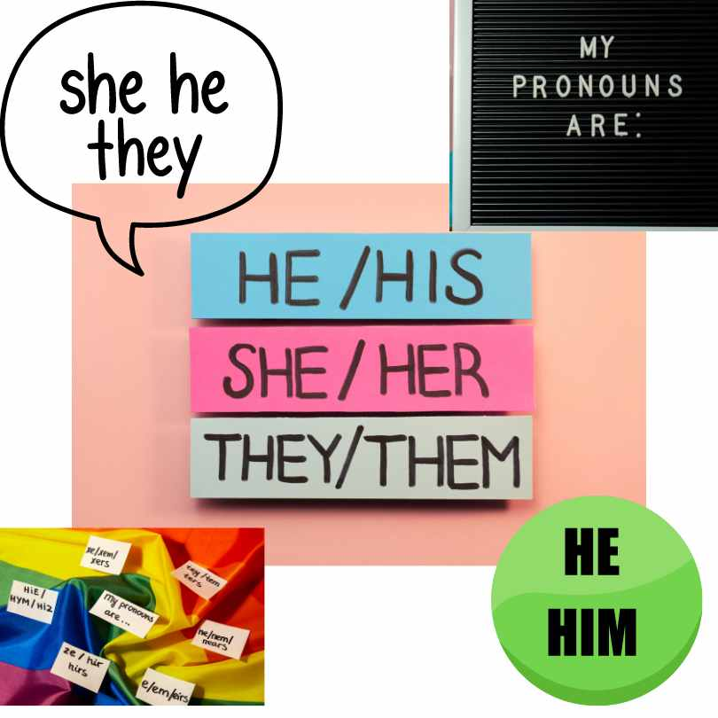

Pronouns are words that we use instead of repeating nouns over and over again.
For example: If we have to say, "Garnet went to the store, and Garnet bought an ice cream,"
We can say "Garnet went to the store, and she bought an ice cream."
"She" is a pronoun that replaces "Garnet."
Pronouns make sentences smoother and less repetitive.
We use pronouns like "he," "she," "it," "they," and "we" in sentences to avoid repeating the same nouns.
They help us communicate more clearly and efficiently.